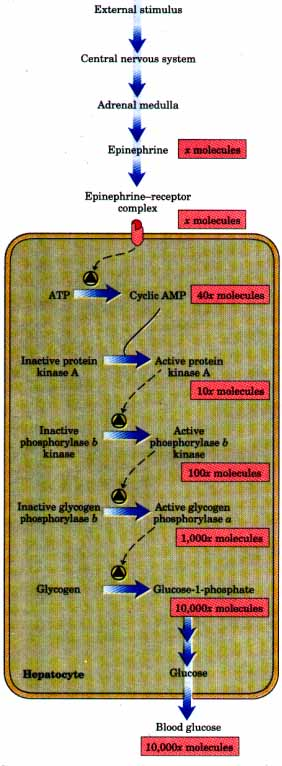
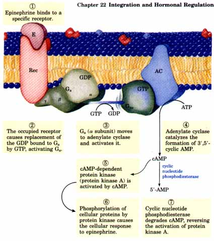
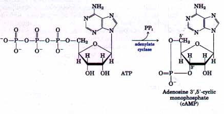
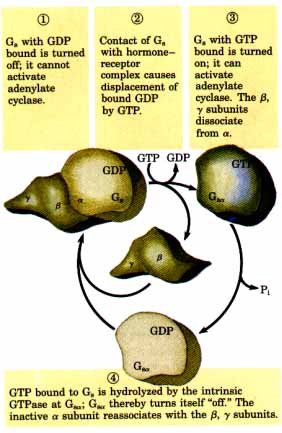
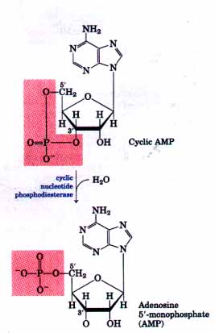
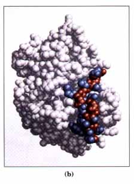
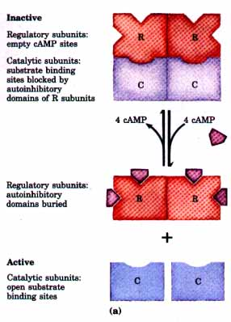
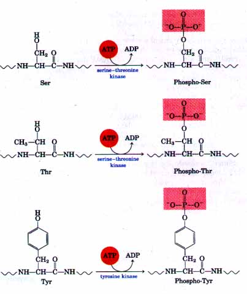
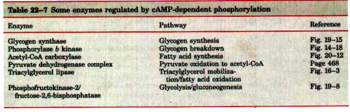

The number of known hormones, and the number of physiological and biochemical effects attributable to hormones, continue to grow, with no end in sight. Fortunately for the student of biochemistry, most of these hormones act through a few fundamentally similar mechanisms. We first consider one of the best-understood hormone mechanisms involving cAMP as the second messenger-which mediates the cellular response to epinephrine. We then describe examples of several other fundamental hormone mechanisms, involving different second messengers (cGMP, diacylglycerols, an inositol trisphosphate, Ca2+), a protein-tyrosine kinase activity, and ligand- and voltage-activated ion channels. Similar mechanisms mediate the action of growth factors and of some oncogenes. The phosphorylation and dephosphorylation of specific proteins are shown to be central to these mechanisms. Finally, we describe how steroid hormones function through the regulation of gene activity.
| The current understanding of the
mechanism of epinephrine (and glucagon) action originated
in the work of Earl W. Sutherland, Jr., and his
colleagues in the early 1950s. These investigators showed
that epinephrine stimulates the activity of glycogen
phosphorylase, which promotes the breakdown of glycogen
to glucose-1-phosphate, the ratelimiting step in the
conversion of glycogen to glucose. Sutherland's
laboratory identified adenosine 3',5'-cyclic
monophosphate (cyclic AMP or cAMP) as the intracellular
messenger produced in response to extracellular
epinephrine. Figure 22-24 schematizes the multistep path
from the initial stimulus to the elevation of blood
glucose. Several of these steps amplify the effect of
hormone binding to the receptor, so that a single
molecule of hormone can change the catalytic activity of
thousands of enzyme molecules. Eventually, five proteins essential to the epinephrine response were identified and purified (Fig. 22-25): (1) a hormone receptor in the plasma membrane; (2) the enzyme adenylate cyclase, which catalyzes cAMP formation; (3) Gs protein, which shuttles between the receptor and adenylate cyclase, activating the cyclase when hormone is bound to the receptor; (4) a cAMP-dependent protein kinase, which phosphorylates target enzymes within the cell, altering their activities; and (5) cyclic nucleotide phosphodiesterase, which degrades cAMP and thereby terminates the intracellular signal. |
 Figure 22-24 Epinephrine triggers a series of reactions in hepatocytes in which catalysts activate catalysts, resulting in great amplification of the signal. Binding of a small number of molecules of epinephrine to specific receptors on the cell surface activates adenylate cyclase. For the sake of illustration, we have shown 40 molecules of cAMP produced by each molecule of adenylate cyclase. These 40 cAMP molecules activate 10 molecules of protein kinase, each of which in turn activates 10 molecules of the next enzyme in the cascade. The amplifications shown here for each step are probably gross underestimates. |
| The
Epinephrine-β-Adrenergic Receptor Complex The action of epinephrine begins with the binding of the hormone to a protein receptor in the plasma membrane of a hormone-sensitive cell, a hepatocyte or myocyte (Fig. 22-25, step 1). The binding is tight but noncovalent, like the binding of an allosteric effector to an allosterically regulated enzyme. The binding site on the receptor is stereospecific and will accommodate only the natural hormone ligand or molecules with a closely similar three-dimensional geometry. Structural analogs that bind to a receptor and mimic the effects of its natural ligand are called agonists; antagonists are analogs that bind without triggering the normal effect, and thereby block the effects of agonists. Adrenergic receptors (the term "adrenergic" reflects the alternative name for epinephrine: adrenaline) are of four general types, defined by subtle differences in their affinities and responses to a group of agonists and antagonists. The four types (α1, α2, β1,β2) are found in different target tissues and mediate different responses to epinephrine. Here we will focus on the β-adrenergic receptors found in muscle, liver, and adipose tissue. These receptors mediate the changes in fuel metabolism described above, including the increased breakdown of glycogen and fat. |
 Figure 22-25 The mechanism that couples binding of epinephrine (E) to its receptor (Rec) with the activation of adenylate cyclase (AC). The seven steps are further discussed in the text. The same adenylate cyclase molecule in the plasma membrane may be regulated by a stimulatory G proteir Gs, as shown or an inhibitory G protein, Gi (not shown). Gs and Gi are under the influence of differ ent hormones. Hormones that induce GTP binding to Gi cause inhibition of adenylate cyclase, resulting in lower cellular levels of cAMP. |
β-Adrenergic receptors are integral membrane proteins with amino acid sequences that contain seven hydrophobic regions of 20 to 28 residues, suggesting that the protein traverses the lipid bilayer seven times (see Box 10-2). The binding site for epinephrine is on the outer face of the plasma membrane; the hormone causes an intracellular change without itself crossing the plasma membrane. The binding of epinephrine apparently promotes a conformational change in the receptor, including the receptor domain that protrudes on the cytosolic face of the membrane. The first stage of hormone action is therefore comparable with the action of an allosteric effector on an allosterically regulated enzyme. The structural change in the intracellular domain of the receptor allows its interaction with the second protein in the signal transduction pathway, a GTP-binding protein.
GTP-Bindtng Protein and Adenylate Cyclase The next element in the signal-transducing pathway is a protein called a stimulatory G protein, or Gs, located on the cytosolic face of the plasma membrane (Fig. 22-25). (Gs takes its name from the fact that, when bound to GTP, it stimulates the production of cAMP by adenylate cyclase, an enzyme of the plasma membrane.) Gs is composed of three polypeptides, α, β, and γ. It is one of a large family of guanosine nucleotide-binding proteins that mediate a wide variety of signal transductions, including those triggered by many other hormones (some of which are discussed later in this chapter) as well as certain sensory stimuli.
Gs can exist in either of two forms. When its nucleotide-binding site (on the a subunit) is occupied by GTP, Gs is active and can interact with and activate adenylate cyclase. With GDP bound to the site, Gs is inactive and incapable of activating adenylate cyclase. Binding of epinephrine causes the receptor to catalyze the displacement of the GDP bound to inactive Gs by GTP; this converts Gs to its active form (Fig. 22-25, step 2 ). As this occurs, the β and γ subunits dissociate from the a subunit; Gsα;, with its bound GTP, then moves in the plane of the membrane from the receptor to a nearby molecule of adenylate cyclase (step 3 ).
Adenylate cyclase is an integral protein of the plasma membrane, with its active site on the cytosolic face (Fig. 22-25, step 4). The association of active Gsα; with adenylate cyclase converts the cyclase to its catalytically active form; the enzyme catalyzes the production of cAMP from ATP, raising the cytosolic level of this second messenger.

| Activation of adenylate cyclase by Gsα is
self limiting; Gsα has a weak GTPase activity and turns
itself off by converting its bound GTP to GDP (Fig.
22-26). The now inactive Gsα dissociates from adenylate
cyclase, thereby inactivating it. After Gsα reassociates
with the βand γ subunits, Gs again becomes available
for interaction with hormonebound receptor. Signal transduction through adenylate cyclase involves two steps in sequence that amplify the original hormone signal (Fig. 22-24). First, one hormone molecule bound to one receptor catalytically activates seueral Gs molecules. Second, by activating a molecule of adenylate cyclase, one actiue Gsα molecule leads to the catalytic synthesis of many molecules o f cAMP. The net effect of this cascade is a very significant amplification of the hormonal signal, which accounts for the very low concentration of epinephrine (and of other hormones) required for activity. Cyclic AMP, the intracellular second messenger in this system, is short-lived; it is quickly degraded by cyclic nucleotide phosphodiesterase to 5'-AMP (Fig. 22-25, step 7; Fig. 22-27), which is not active as a second messenger. The intracellular signal therefore persists only as long as the hormone receptor remains occupied by epinephrine. Methyl xanthines such as theophylline (a component of tea) inhibit the phosphodiesterase, potentiating the action of agents that act through adenylate cyclase. Most signal receptors also have some mechanism for reducing their sensitivity to a chronically present signal. In the case of the adrenergic receptor, this desensitization involves phosphorylation of receptor molecules by a specific protein kinase. In other cases, desensitization occurs by removal of receptors from the cell surface. Cyclic AMP-Dependent Protein Kinase We have seen that one effect of epinephrine is to activate glycogen phosphorylase b. Recall that this conversion is promoted by the enzyme phosphorylase b kinase, which catalyzes the phosphorylation of two specific Ser residues in phosphorylase b, converting it into phosphorylase a (see Figs. 14-17, 14-18). Cyclic AMP does not affect phosphorylase b kinase directly. Rather, cAMP-dependent protein kinase, also called protein kinase A, which is allosterically activated by cAMP, catalyzes the phosphorylation of inactive phosphorylase b kinase to yield the active form (equivalent to steps 5 and 6 in Fig. 22-25). |
 Figure 22-26 The protein Gs acts as a self-inacti- vating switch.  Figure 22-27 The degradation of cAMP by cyclic nucleotide phosphodiesterase counterbalances the synthesis of cAMP from ATP by adenylate cyclase. In many tissues phosphodiesterase is stimulated by Ca2+, an effect mediated by the regulatory Ca2+ binding protein calmodulin (see Fig. 22-33).
|
| The inactive form of cAMP-dependent
protein kinase contains two catalytic subunits (C) and
two regulatory subunits (R) (Fig. 22-28a). The tetrameric
R2C2 complex is catalytically inactive, because an
autoinhibitory domain of each R subunit occupies the
substrate binding site of each C subunit. When cAMP binds
to two sites on each of the two R subunits, the R
subunits undergo a conformational change, and the R2C2
complex dissociates to yield two free, catalytically
active C subunits. Phosphorylase b kinase is not the only target of cAMP-dependent protein kinase. This protein kinase can phosphorylate the hydroxyl group of Thr and Ser residues (Fig. 22-29) in a number of other important enzymes in different kinds of target cells, thereby altering their catalytic activities (Table 22-7). Although the proteins regulated by cAMP-dependent phosphorylation have diverse catalytic activities, they share a region of sequence homology around the Ser or Thr residue that undergoes phosphorylation. This "consensus sequence" marks these proteins for regulation by cAMP; it is the region recognized by the substrate binding site of the cAMP-dependent protein kinase. The autoinhibitory domain of the regulatory subunit of the protein kinase also contains a consensus sequence. Determination of the three-dimensional structure of this enzyme by X-ray crystallography (Fig. 22-28b) has shown how this autoinhibitor domain can occupy the substrate binding site of a C subunit and prevent access to protein substrates (such as phosphorylase b kinase) that are targets for phosphorylation, and thus for regulation by this enzyme.  |
 Figure 22-28 (a) Activation of cAMP-dependent protein kinase. Cyclic AMP activates the protein kinase by causing dissociation of the catalytic (C) subunits from the inhibitory regulatory (R) subunits. This allows phosphorylation and activation of phosphorylase b kinase, which in turn phosphorylates and activates glycogen phosphorylase. (b) Structure of one catalytic subunit of the cAMPdependent protein kinase. A potent inhibitor peptide (PKI), which mimics the structure of the normal substrates for phosphorylation, is shown here occupying the substrate binding site. The peptide backbone of PKI is shown in red; R groups are shown in blue. This inhibitor contains the sequence Arg-Arg-Gln-Ala-Ile, which corresponds to the consensus sequence recognized by protein kinase A (see Table 22-9), except that the Ser residue phosphorylated in substrates is replaced by an Ala residue in the inhibitor. In the inactive R2C2 tetramer, the autoinhibitory domain of an R subunit occupies the substrate binding site, inhibiting the catalytic activity of the C subunit. |
| Biochemists now appreciate that the
details of epinephrine action represent a particular
example of a more general theme. As we will see, hormone
signals often lead, via pathways similar to that shown in
Figures 22-24 and 22-25, to the phosphorylation of
certain target enzymes by one or more protein kinases. As
noted above, the cAMP dependent protein kinase phosphorylates Ser and Thr residues in target proteins. Other protein kinases phosphorylate Tyr residues (Fig. 22-29). Note that the target of phosphorylation by cAMP-dependent protein kinase being considered here-phosphorylase b kinase-is another protein kinase. This pattern, in which phosphorylation of one protein kinase leads to phosphorylation of another in a cascade of reactions that amplify the initial signal, is common in intracellular signal transduction pathways. We will encounter it again later in this chapter. |
 Figure 22-29 The reactions catalyzed by protein kinases involve phosphate group transfer to the hydroxyl in the side chain of a Ser, Thr, or Tyr residue. One large class of protein kinases, typified by cAMP-dependent protein kinase, phosphorylate only Ser or Thr residues and thus are called serinethreonine kinases. Another class of protein kinases, typified by the insulin receptor, act only on Tyr residues. In each case, the addition of the highly charged and bulky phosphate group alters the conformation of the phosphorylated protein, bringing about a change in its activity or in its kinetic properties. |
